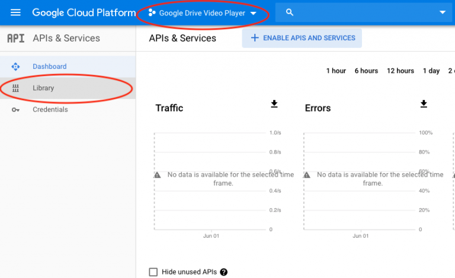
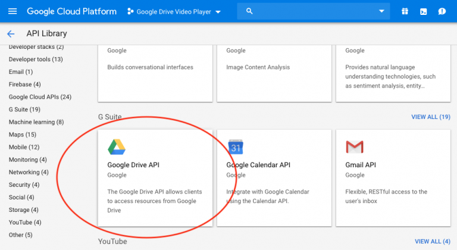
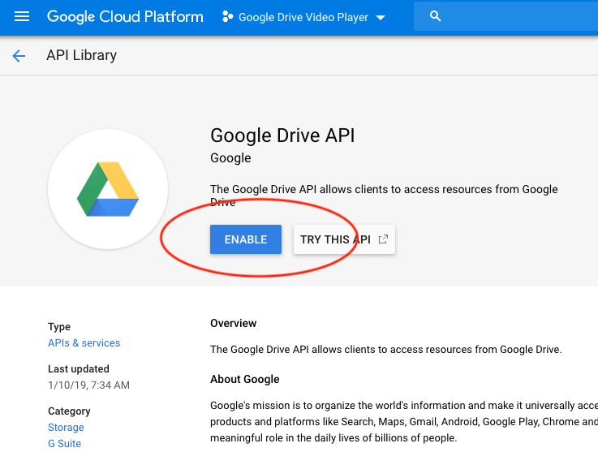
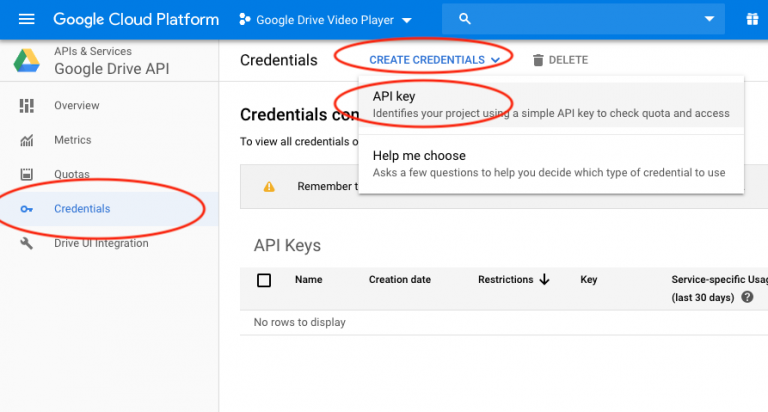
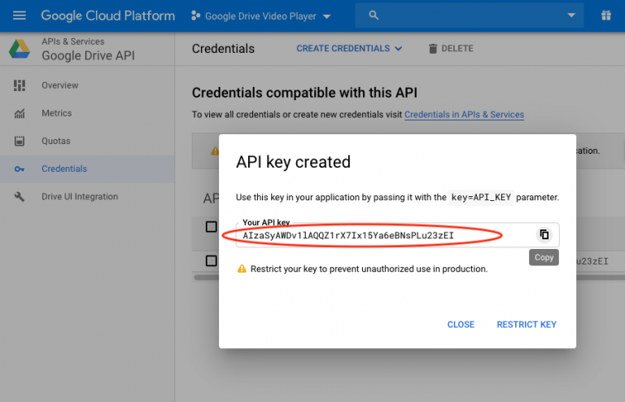

How to get Google Drive API Key?
This tutorial will guide you how to apply for a Google Drive API key. You can use the key to generate Google Drive direct download links for image, audio and video files hosted on Google Drive.
There are 4 steps in this tutorial:
- Step 1 - Log into the Google Cloud Platform
- Step 2 - Create a project in Google Cloud Platform dashboard
- Step 3 - Enable Google Drive API
- Step 4 - Create a Google Drive API key
Step 1 - Log into the Google API Console
First please visit Google Cloud Platform and login with your Google account: https://console.cloud.google.com/apis/
Step 2 - Create a project in Google API dashboard
In Google Cloud Platform dashboard, click the "Select a project" drop down menu, then click "New Project".

Step 3 - Enable Google Drive API
In the dashboard, make sure the new project is selected in the project list, then click Library on the left menu.
In the Library page, find the Google Data API and click it.
In the Google Data API page, click the enable button.
Step 4 - Create a Google Drive API key
In the dashboard, click Credentials on the left menu, then click the CREATE CREDENTIALS drop down menu and select API key.
In the popup API key dialog, copy the API key.
